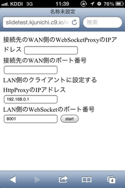

- iPadで外出先でも自由にネットにアクセスしたい
- iPadの３G付きは維持費が掛かる
- iPhone4Sを持っている
- iPhone4SのSafariはWebSocketが使える
- 実装方法は不明だが、JBせずにテザリングの実績がある模様
開発背景
システム概要図
実現に向けて
必要なものたち
- WebSokect通信可能なHTTPサーバ
- HTTPプロキシサーバー
- Wifiアクセスポイント
0からは非常に難しいので
- node.jsを使用
- Apacheなんかより全然早くリクエストをさばける！！
- HTTPサーバの実装が比較的容易
- WebSocket通信のライブラリもいくつか存在する
- WebSocket通信にはSocket.ioライブラリを使用
Socket.ioがどれくらい簡単かって?
サーバ側の処理
var app = require('http').createServer(handler)
, io = require('socket.io').listen(app)
, fs = require('fs')
io.sockets.on('connection', function (socket) {
socket.emit('news', { hello: 'world' });
socket.on('my other event', function (data) {
console.log(data);
});
// クライアントにHTMLを返す処理は省略
});
クライアント側の処理
<script src="/socket.io/socket.io.js"></script>
<script>
var socket = io.connect('http://localhost');
socket.on('news', function (data) {
console.log(data);
socket.emit('my other event', { my: 'data' });
});
</script>
WifiアクセスポイントやHTTPプロキシーをどうするか？
Raspberry Piで実現した！
Raspberry Piの特徴
手のひらサイズのワンボードLinux
iPhone,iPadの他に持ち運ぶ必要があるがこのサイズなら問題なし！Linuxベースなので、簡単に多くのOSSが動かせる
動作画面イメージ（iPhone4S）
Wifiのアクセスポイントを設定して、iPhone4Sでnode.jsのアプリのURLを指定して 開くと表示される画面
動作画面イメージ（WAN側）
iPhone4Sから３G回線経由でのアクセスを受けるPCの画面

問題発生！
Raspberry PiのUSBポートの電源供給能力が低いらしい
手持ちのUSB Wifiアダプターだと電力不足！ 単3乾電池4本で駆動させ、勉強会様に動作状況を動画に収めようと していたが途中で落ちてしまった。。。Wifiアダプター（GW-USMicro300）の消費電流
最大320mA必要Raspberry Pi本体の消費電流
500mA弱程度必要乾電池4本のUSB簡易電源の出力
800mA程度解決策
電源供給出来るUSBハブにWifiアダプターを挿す
Raspberry Pi本体の他に所持品が増えてしまう。消費電力の低いWifiアダプターを探す
現在使用しているタイプは300Mbpsタイプなので、 通信速度の低い150Mbpタイプの物なら消費電力が 低いものもありそう。次回までの課題
奥さんを説得して、消費電力の低いUSB Wifiアダプターを購入する
ついでにモバイルバッテリーもこのどさくさに購入する
Haswell搭載のMacBook Air買ったら殺される！
- USBハブも必要となると、いっそのこと11インチのMacBook Airで。。。
今回のOSSに参加して
疑似テザリングシステムの課題が見えてきた
Raspberry Piを購入出来た
- Linuxでの無線LANの周辺知識が得られた
- HTML5のリモートデスクトップクラインとnoVNCの存在が分かった
- SDカードのデータが飛びやすい（フツーにリブートするだけでも起こった）
node.jsの勉強（復習）が出来た
HTML5の勉強が出来た(このスライドもHTML5製)
久しぶりにお酒が飲めた！(懇親会にて)
<Thank You!>
二男が5月30日早朝4時に無事生まれました！